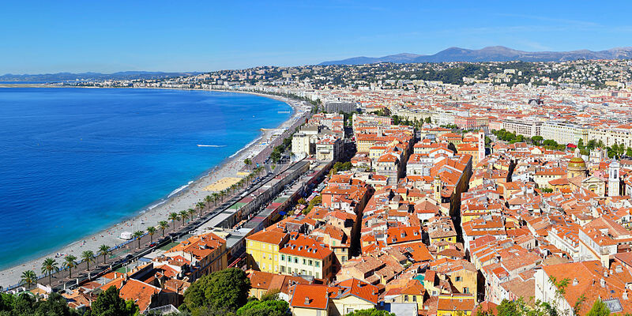
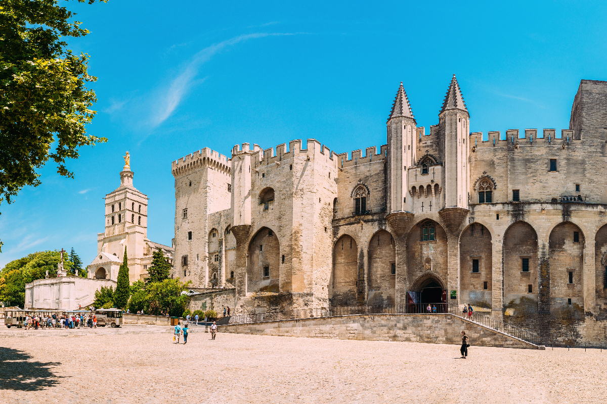
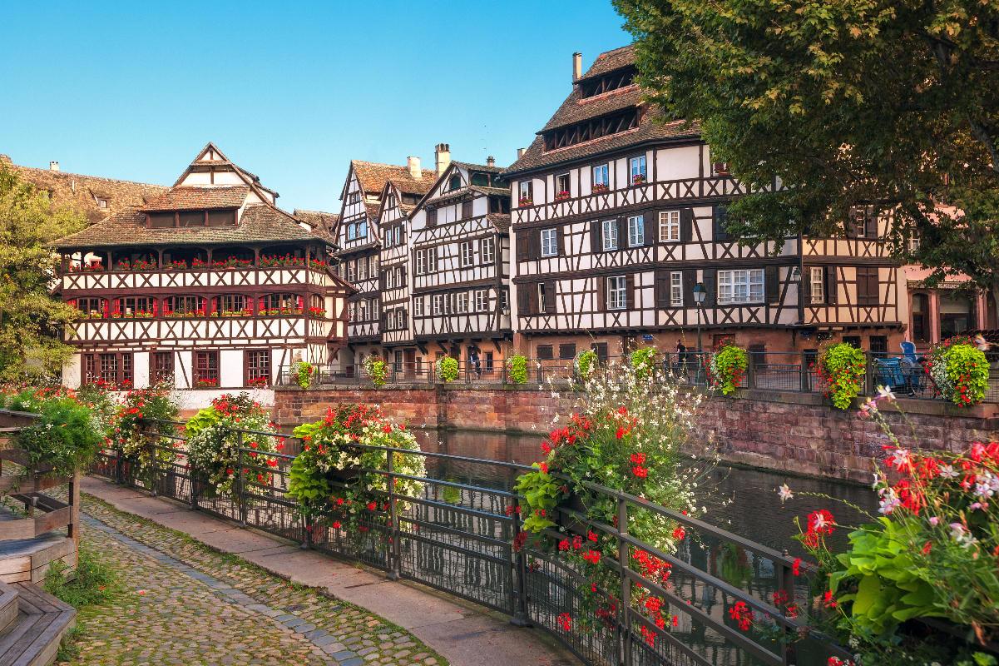

기타 소도시
- 니스
- 파리 외 도시 중 가장 잘 알려진 도시
- 따뜻한 날씨와 아름다운 해변을 즐길 수 있는 곳
- 니스카니발, 칸영화제 등 세계적인 축제 즐길 수 있음
- 아비뇽
- 교황의 도시이자 중세의 모습을 볼 수 있는 도시
- 교통의 요지로, 발랑솔, 액상 프로방스 등으로 이동하기 쉬움
- 스트라스부르
- 독일과 프랑스 모두의 문화를 만날 수 있는 곳
- '하울의 움직이는 성'의 배경이 될 만큼 동화 속 분위기
- 콜마르, 디즈니랜드파리 등으로 이동하기 쉬움


